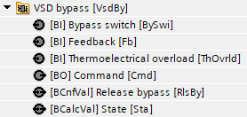
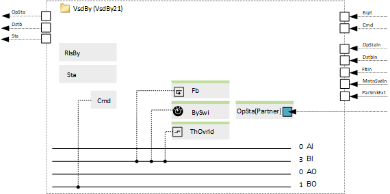
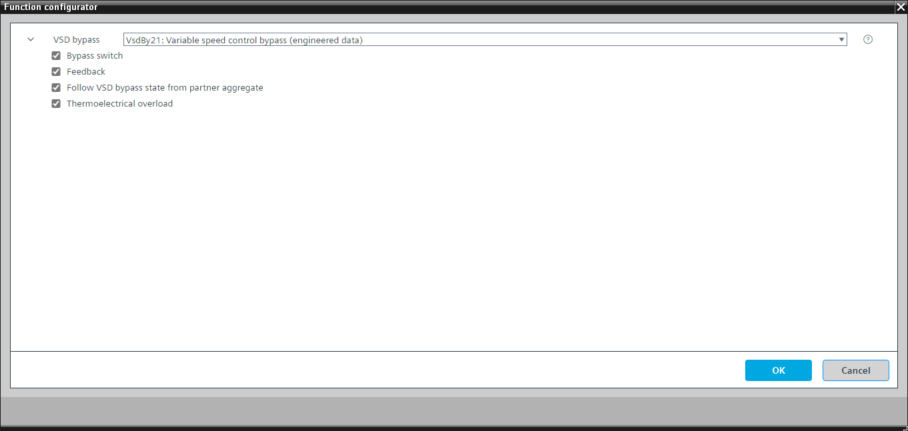

[VsdBy21] 变速控制旁路
Program block, name / node subtype: [VsdBy21] Variable speed control bypass
Library hierarchy: Universal equipment
Family: VsdBy
项目树 | 图表 |
|---|---|
|
 |  |
Configurator


程序块存储在没有 I/Os. 的库中 使用auto-create and auto-connect函数创建 I/Os 和 /or 将它们连接到接口块，例如 R_A、CMD_B。或者，从包含库中预定义 I/Os 的文件夹中取出 I/Os，并从工厂中取出 /or，并将它们连接到接口块。
控制变速驱动器的旁路功能 (VSD)。
如果 VSD 出现故障，它会自动旁路，电机以恒定速度运行，具体取决于电源频率，例如 50 Hz。
配置值对象可以在发生故障时自动切换到 VSD 旁路（默认值：True）。
“旁路开关”选项手动打开 VSD 旁路。
下面重点介绍VsdBy21在风扇中的使用。
如果 VsdBy21 用于风扇，则该风扇很可能是空气处理装置的一部分。
程序中的一个参数定义了在其中一个风扇的 VSD 发生故障时空气处理装置的行为：
0 = 空气处理机组不停止并继续运行。
VSD 关闭并且 VSD 旁路在短暂的可调节延迟（例如 10 秒）之后开启。重置 VSD 的故障后，VSD 旁路关闭，并在相同的短暂延迟后，VSD 开启。此延迟取决于所安装的设备。
1 = 空气处理机组停止。
VSD 关闭，空气处理机组关闭并保持关闭一段可调节的时间，例如 1 分钟（很可能长于 1 分钟）。然后，空气处理机组再次启动，并且具有故障 VSD 的风扇在 VSD 旁路上运行。复位 VSD 的故障后，空气处理装置关闭并在相同的可调时间内保持关闭状态。然后空气处理机组再次启动，风扇的 VSD 开启。空气处理机组保持关闭的时间取决于安装的设备和功能块 CMDSEQ_B 中的设置。
在任何一种情况下，空气处理机组中另一个风扇的行为（继续 VSD 或也切换到 VSD 旁路）取决于是否存在选项“遵循合作伙伴聚合的 VSD 旁路状态”以及连接到其接口的该风扇的“状态”。
该程序块具有以下可选功能：
Option: Bypass switch (1xBI)
如果故障时自动切换的配置值对象设置为“True”（默认设置），则手动打开 VSD 旁路。
Option: Follow VSD bypass state from partner aggregate
定义此风扇单元的 VSD 旁路的行为（继续使用 VSD 或也切换到 VSD 旁路），以防其他风扇的 VSD 出现问题并切换到 VSD 旁路。
Option: Thermoelectrical overload (1xBI)
读取电机的热电过载信号并产生警报。
Option: Feedback (1xBI)
读取反馈信号（例如来自风扇控制单元的反馈信号），如果风扇必须运行时反馈丢失，则生成警报。
姓名 | 描述 | 类型 | 报警/通知类 | 趋势/类型 | |
|---|---|---|---|---|---|
|
Cmd | Command | BO：二进制输出 | No | 是的，4 | |
RlsBy | Release bypass | BCnfVal: Binary configuration value | No | No | |
Sta | State | BCalcVal: Binary calculated value | No | No | |
姓名 | 描述 | 类型 | 报警/通知类 | 趋势/类型 | |
|---|---|---|---|---|---|
|
BySwi | Bypass switch | BI：二进制输入 | No | 是的，4 | |
ThOvrld | Thermoelectrical overload | BI：二进制输入 | 是的，5 | No | |
Fb | Feedback | BI：二进制输入 | 是的，4 | No | |